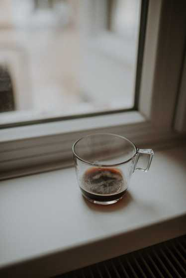

パン屋 / 長野県伊那市西町
rokusanろくさん
公園のように、パンのまわりに人が集まる店。
天然酵母のパンを、伊那の小麦と野菜とともに。おなかをすかせたまま、ふらりとどうぞ。

ABOUT
店主・六波羅さんの、人が集まるパン屋
店主の六波羅朝之さんは伊那市出身。上京して服飾の仕事を経験したのち、東京のパン屋「ルヴァン」の富ヶ谷店で4年間修業し、2025年に故郷へ戻りました。2026年6月3日、元ペットショップの建物を改装して開店しています。
- 修業先で見た「人が自然に集まり、会話が生まれる」雰囲気に影響を受け、「公園のように」世代を問わず気軽に来られる店を目指している
- 店内は「主役がパンになるように」、装飾を削いだデザイン
- パンは自家培養の天然酵母で焼き、小麦は伊那市産「しらね小麦」を使用
出典: 地域情報サイト「Web Komachi」の開店紹介記事、信濃毎日新聞デジタルの記事ほか。店名の意味は確認できていません。

BREAD
報道で紹介されたパン
開店時の紹介記事で挙げられていた品です。写真はイメージで、実際の商品ではありません。品揃え・価格・販売日は 準備中(最新はInstagramでご確認ください)。

カンパーニュ
皮の香ばしさを楽しむ量り売りのパンとして紹介されています。

全粒粉クロワッサン
数に限りがあり、午前中に売り切れることもあると紹介されています。

ゴーダチーズのパン
溶岩窯で焼く、開店以来の人気の一品と紹介されています。

スコーン・パイなど
全粒の酵母スコーン、季節のくだものパイなども紹介されています。



VOICE
口コミ(イメージ例)
イメージ例
焼き色の濃いパンの香りに、思わず立ち止まりました。散歩の途中に寄りたくなる場所です。
イメージ例
シンプルな店内で、パンがすっと目に入ります。何を選ぶか迷う時間も楽しいです。
イメージ例
数日たっても味の変化を楽しめるパンで、家での食卓が少し豊かになりました。
上の3件は制作側が作った例文で、実在のお客様の声ではありません。